Chez Lurdesau charbon de bois
Le charbon, la francesinha, un vin portugais. La churrasqueira du quartier Gare.
L'espetada, sur la braise.
Les brochettes suspendues au-dessus du charbon — la viande qui grille, tourne doucement et dore sur les braises.
Picanha, bœuf, chouriço, oignon et poivron enfilés sur la broche, servis debout au-dessus d'une assiette. C'est le churrasco à la portugaise : généreux, fumé, partagé. On fait glisser une pièce, on se ressert, et le repas dure.
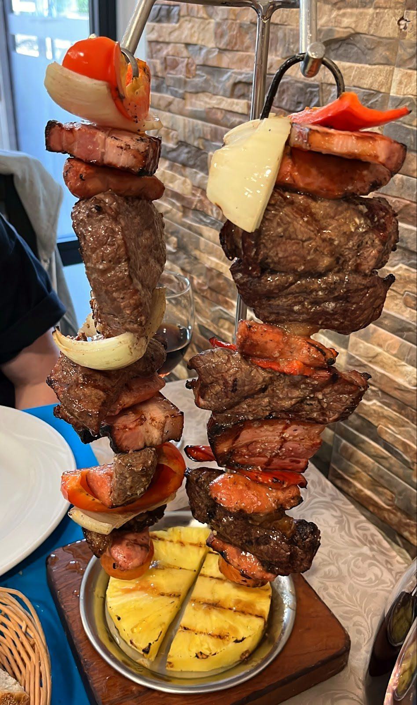
Au charbon de boisCe qu'on vient chercher ici
Trois plats que la maison fait tous les jours — droit du Portugal, sans chichi.
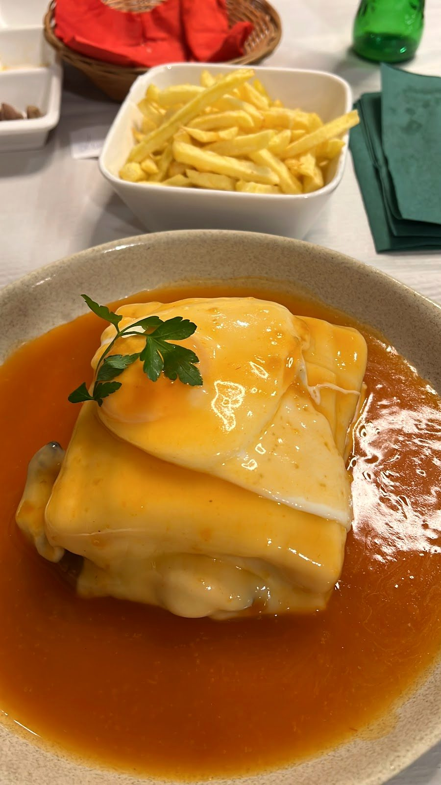
Francesinha
Pain, viandes et fromage fondu, nappés de la sauce maison — avec des frites.
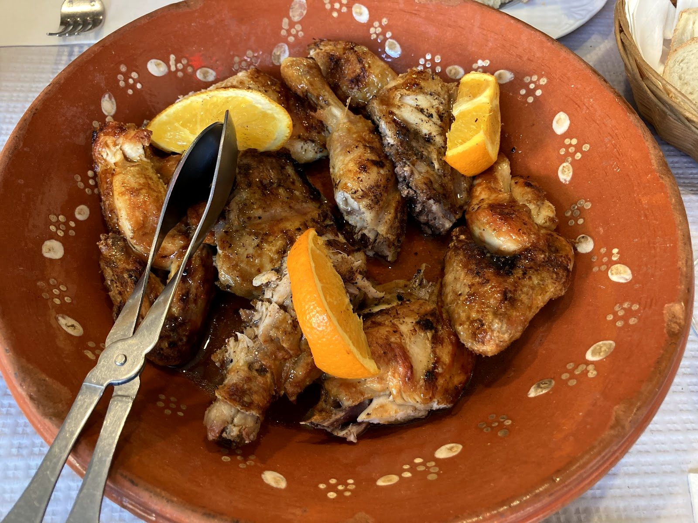
Frango grelhado
Le poulet grillé, doré et juteux, servi dans la louça portugaise avec une touche d'orange.
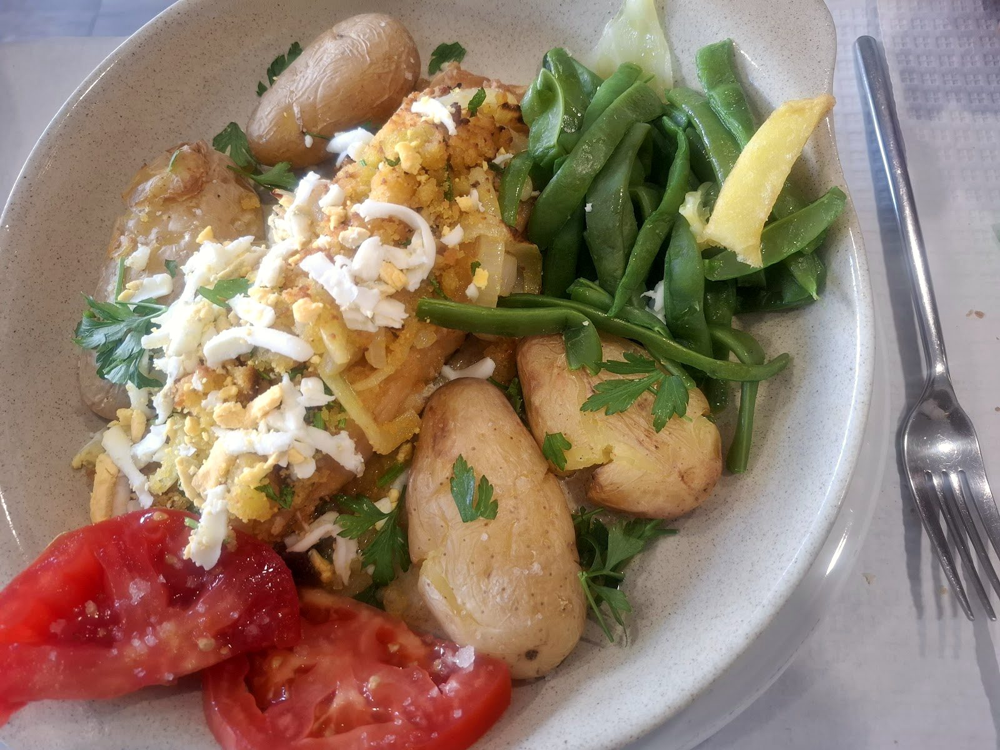
Bacalhau
La morue à la portugaise, avec batatas a murro, chou et un filet d'huile d'olive.
Généreux, au feu de bois
Les grillades, le poisson du gril, les douceurs et un rouge portugais — la cuisine qu'on partage.
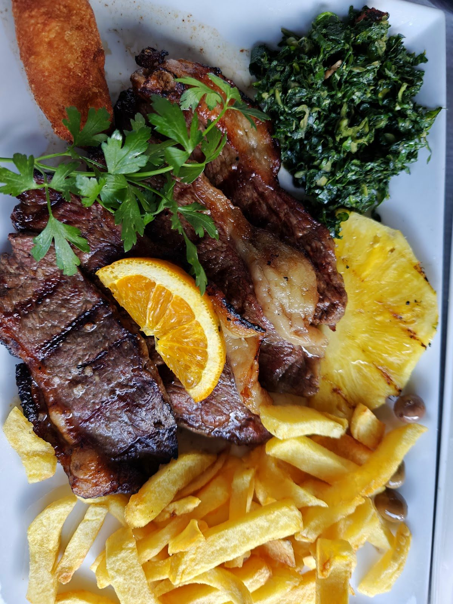
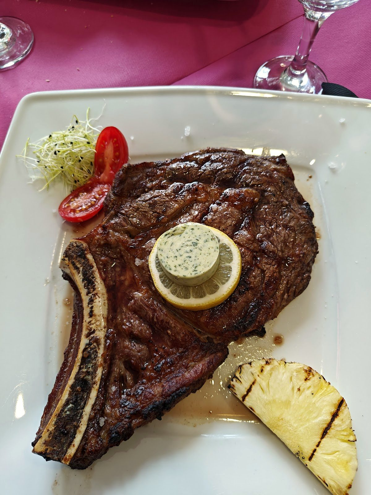
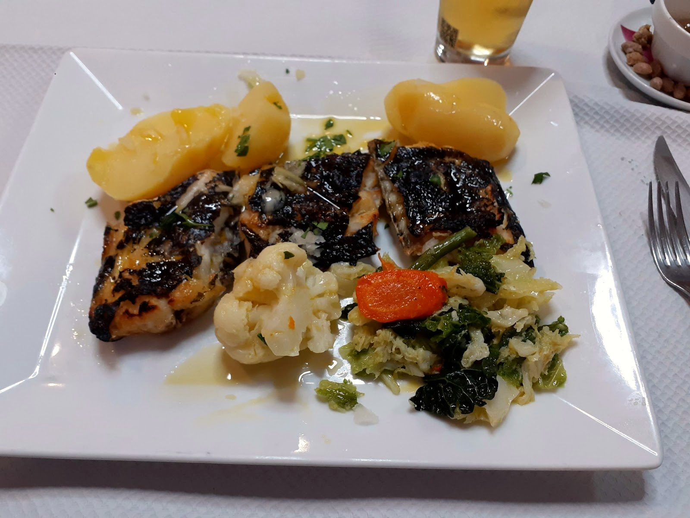
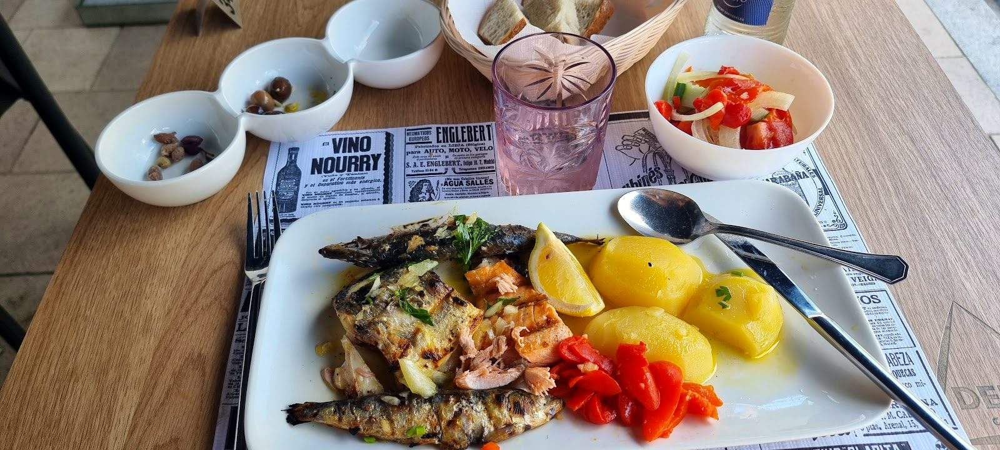
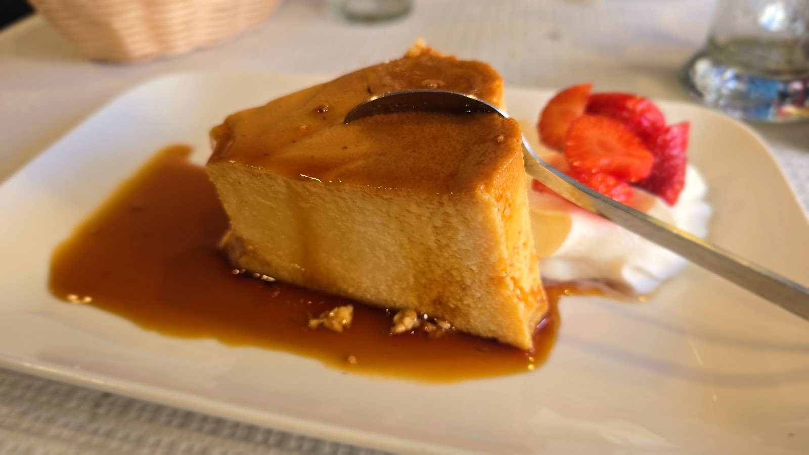
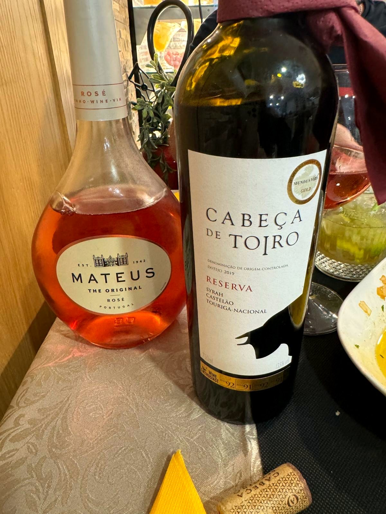
La churrasqueira du quartier Gare
Rue de Strasbourg, à deux pas de la gare : une salle simple, une terrasse sur le trottoir, et l'accueil chaleureux d'une maison portugaise.
On vient pour la braise, on reste pour l'ambiance — le va-et-vient du service, une bouteille sur la table, et le charbon qui travaille au fond. La morabeza, cette hospitalité qu'on ne raconte pas : on la vit sur place.
Aujourd'hui, Chez Lurdes n'a qu'une page Facebook — pas de site. Cette page en est une démonstration.
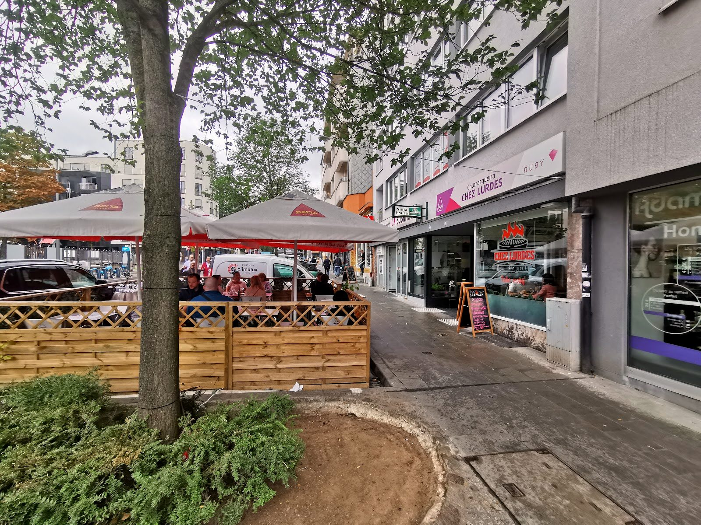
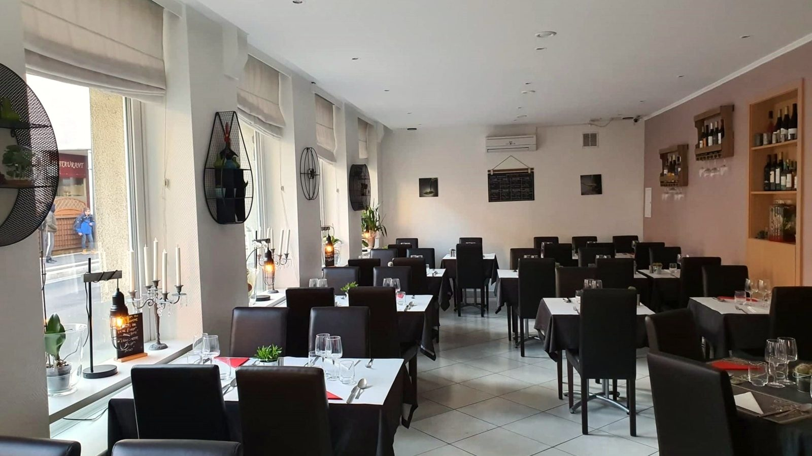
Do carvão — au charbon
Un aperçu, d'après les plats de la maison. La carte complète et les prix sont à confirmer sur place.
Do carvão · au charbon
Grelhados · les grillades
Especialidades
Mar & doces
Plats d'après les photos publiques de la maison, à titre indicatif. Aucun prix n'est publié : la carte et les prix sont à confirmer sur place.
Nous trouver
L-2561 Luxembourg · Gare
Horaires à confirmer